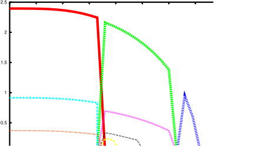

Next: Program phased - graphical Up: Programs for Graphical display Previous: Programs display_densities - display Contents Index
produces neutron intensity for one reflection from results/mcphas*.hkl file
Options: -7 .... extract reflex number 7
-0,1,0 .. extract (0 1 0) reflex
-h .... help
-FT ... extract value of Fourietransform from e.g. mcphasa.hkl,... file
If no file is given the program uses file results/mcphas.hkl. and plots the neutron intensity
 .
.
|

|
In addition to the display of the temperature dependence there is the possibility to generate a powder diffraction pattern by the program mcdiff . The recommended procedure is to use
Continue by using the modules